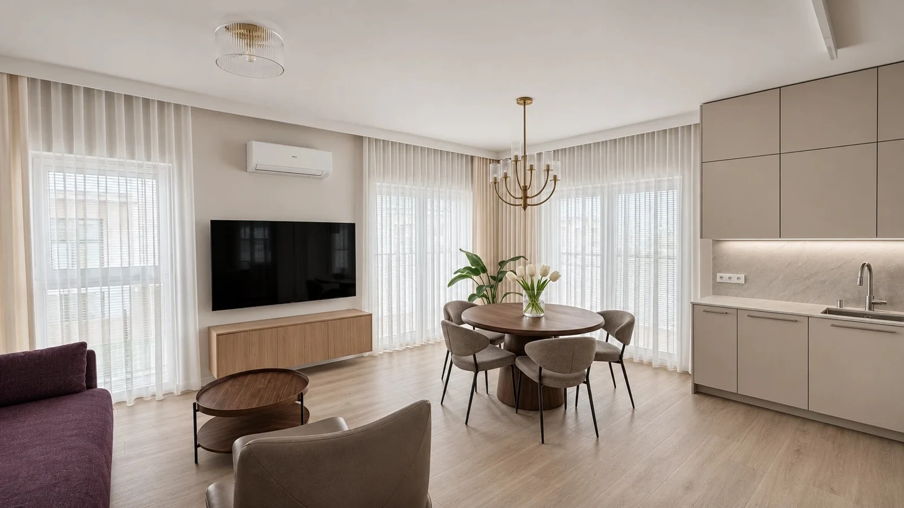
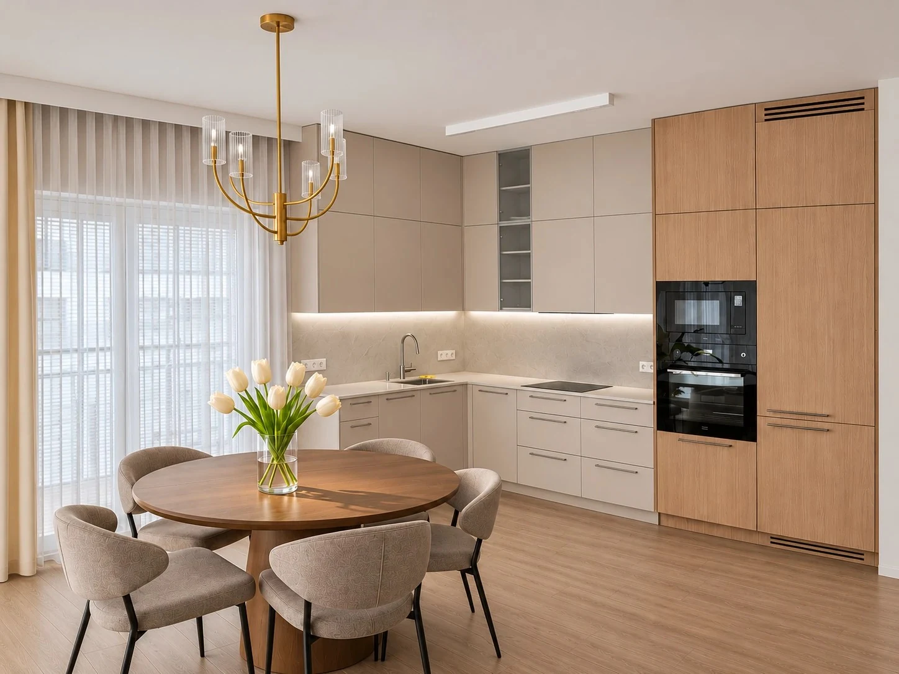
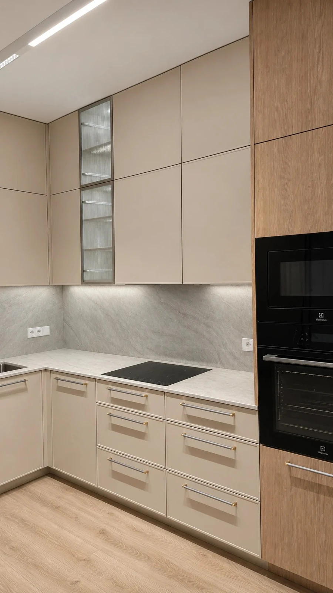

Zaprojektowałyśmy przez dwadzieścia lat setki kuchni: małych i dużych, otwartych i zamkniętych. Jeśli miałybyśmy wskazać jedno, czego nas to nauczyło, to to, że dobra kuchnia nie zaczyna się od mebli. Zaczyna się od człowieka. Dlatego zanim pokażemy szuflady i blat, opowiemy o kobiecie, dla której ta kuchnia powstała.
Wszystko zaczęło się od rozmowy
Jagoda lubi gotować i nie chce już robić tego w osobnym pomieszczeniu, odcięta od reszty rodziny. W poprzednim mieszkaniu kuchnia była zamknięta i większość rodzinnych spotkań spędzała sama, przygotowując kolejne potrawy i donosząc je do stołu. Tym razem miało być inaczej.
To zadecydowało o otwarciu kuchni na część dzienną. Bo każdy nasz projekt zaczyna się tak samo: nie od stylu ani koloru frontów, tylko od rozmowy o zwykłym dniu. Kto gotuje i o jakich porach? Co stoi na blacie codziennie, a co raz w roku? Zadajemy kilkadziesiąt takich pytań, zanim narysujemy pierwszą kreskę. Część brzmi banalnie. Odpowiedzi nigdy.
Dlaczego zrezygnowałyśmy z wyspy
Na początku zaproponowałyśmy wyspę. Rozumiemy, dlaczego: od lat jest symbolem „kuchni marzeń”. Po rozmowach z inwestorami zrozumiałyśmy jednak, że w tym domu ważniejsza będzie otwarta przestrzeń, dużo blatu roboczego i możliwość wspólnego spędzania czasu. Wyspa zabrałaby miejsce, którego rodzina potrzebuje przy wspólnym stole.
Zaproponowałyśmy zabudowę w kształcie litery L, w pełni otwartą na jadalnię. Nie ma ściany ani drzwi: kiedy Jagoda gotuje, słyszy rozmowy przy stole i może się do nich włączyć, wystarczy, że się odwróci. Rodzina zyskała przy stole miejsce, które wyspa by jej zabrała. Wyspa nie jest złym pomysłem. Po prostu nie była najlepszym pomysłem dla tych konkretnych ludzi.

Wysokość blatu nie jest święta
Przy okazji dopasowałyśmy wysokość blatu do wzrostu Jagody. To szczegół, o którym prawie nikt nie myśli, a który decyduje o tym, czy po godzinie gotowania bolą plecy. Standardowe 85 cm to norma z katalogu, a ciało klientki jest ważniejsze.
Porządek, który widać dopiero po otwarciu szuflady
W tej kuchni sercem porządku są szuflady z wewnętrznymi organizerami na sztućce, przyprawy, deski i folie. Każda rzecz ma swoją przegrodę. Na wizualizacji tego nie widać, a w codziennym użyciu zmienia wszystko.


Do tego dochodzi elektryczne otwieranie szuflad. Brzmi jak gadżet, dopóki nie stoi się z rękami w cieście albo z brytfanną w obu dłoniach. Wystarczy lekko trącić front kolanem i szuflada otwiera się sama. W kuchni, w której naprawdę się gotuje, to nie luksus, tylko wygoda i higiena pracy.
Narożnik, który przestał być czarną dziurą
Kuchnia w kształcie litery L ma jedną piętę achillesową: narożnik. Każdy zna szafkę, do której wkłada się rzeczy raz i już ich nie widzi. W tej kuchni narożnik obsługuje system LeMans II: wysuwane półki wyjeżdżają z szafki razem z zawartością i podsuwają ją pod rękę. Nie trzeba się schylać ani sięgać głęboko w szafkę. Wcześniej narożnik byłby magazynem zapomnianych rzeczy, teraz jest jednym z najwygodniejszych miejsc w całej zabudowie.


Z kulis pracowni: jak zwykle pracujemy
Projekt kuchni to zwykle 30–40 godzin pracy, od pierwszej rozmowy do ostatniego rysunku wykonawczego.
Zanim powstanie wersja ostateczna, układ potrafimy zmienić nawet trzy razy.
Klientom zadajemy kilkadziesiąt pytań o codzienne nawyki, zanim narysujemy pierwszą kreskę.
Pierwsze, co robimy, to nie moodboard. To rozmowa o tym, jak wygląda zwykły wtorek w tym domu.
Kuchnia, która żyje
Najlepszy projekt to taki, którego się nie zauważa, bo po prostu działa. Szuflada otwiera się, kiedy mamy zajęte ręce, garnek leży tam, gdzie sięga dłoń, a gospodyni, nawet stojąc przy blacie, jest częścią rozmowy przy stole. Dla nas najlepszym dowodem jest to, że Jagoda jest tą kuchnią zachwycona.
Zdjęcia: Alicja Wątroba. Dwa pierwsze ujęcia zostały obrobione cyfrowo.
Chcesz porozmawiać o swojej kuchni? Pierwsze spotkanie jest bezpłatne. Umów spotkanie.